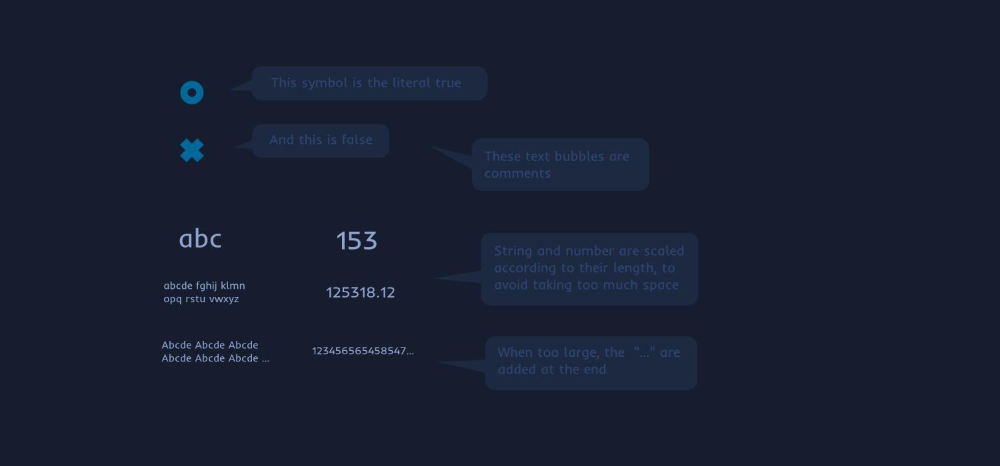
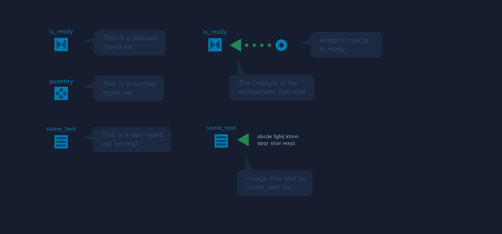
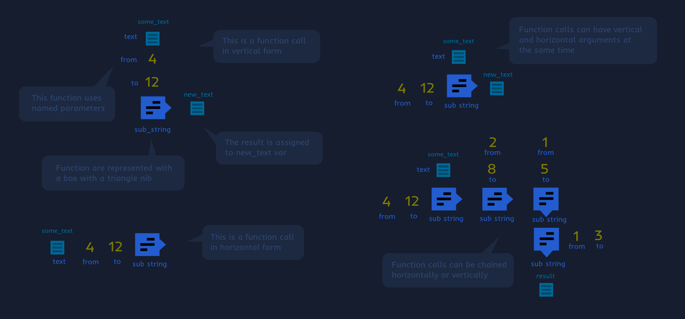
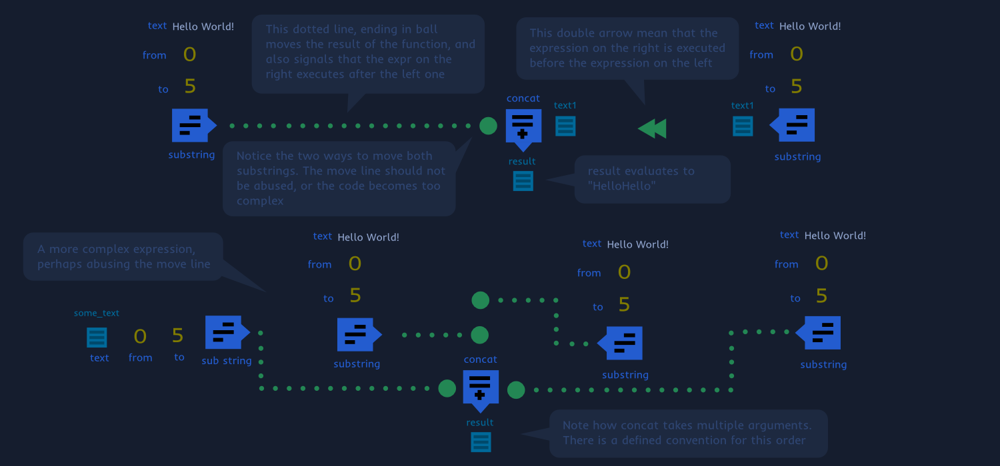
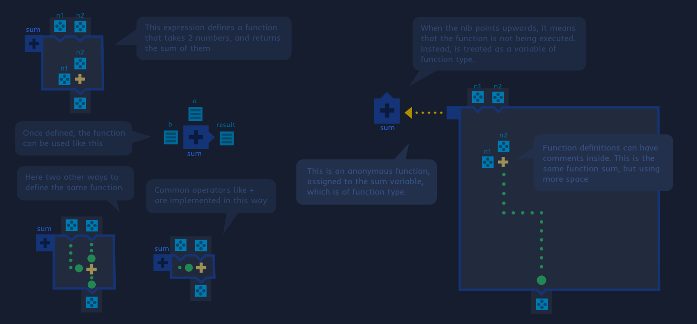
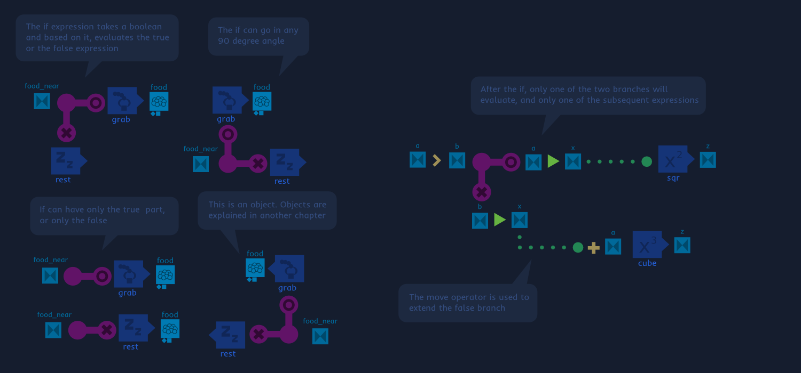
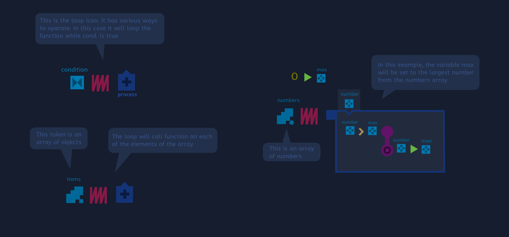
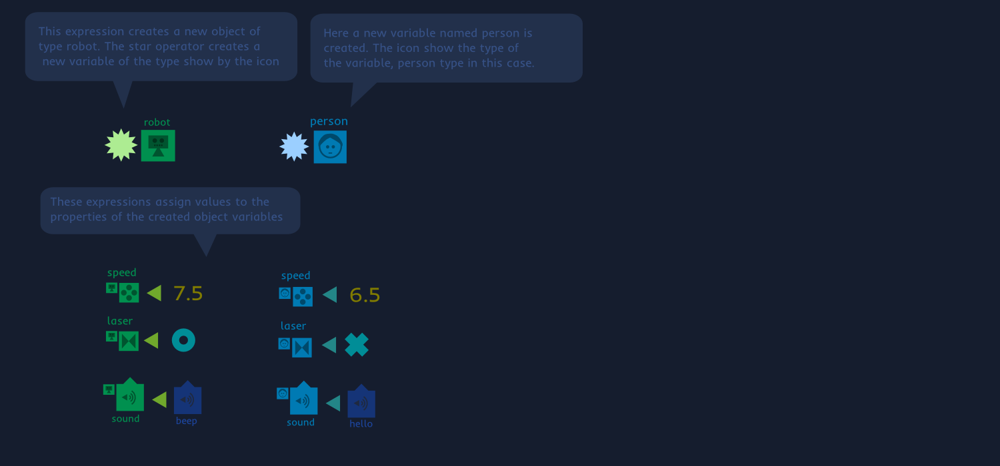

xoL: Computer programming evolved
xoL presentation. This page is a work in progress.
xoL is a visual programming language, similar to text based ones. The visual part allows xoL to offer enhanced information when reading code. Type information, represented with icons, is particularly notorious in xoL. This enhanced portrait of types, is intended to make reading programs easier.
xoL is designed to be easy to learn and easy to use. For this, is designed to be simple. Where other languages provide multiple ways to do something, xoL may provide just one, the simplest. One area where the simplicity goal can be appreciated is the xoL type system (to be added). This simplicity as a design goal is based on the belief, that programmers are more productive when using a simple programming language. XoL tries to be as minimal as possible, while offering the important features.
Literals
Literals in xoL are written as is. Their size is scaled according to its length, to avoid having too large items. Code comments are enclosed in bubbles, as can be seen in the image.

Scalars
Scalar variables are represented by a little icon, that shows the type. The name goes above the icon. There is a standard icon for each of the basic types: boolean, number and string.A dotted circles line, ending in a triangle is the assignment operator. The dotted circles may not be needed is the two elements are near.

Function calls
Functions are represented with a block, with a small nib. An icon in the block identifies it. The function name goes beside the block, usually below. Function arguments are placed above or on the sides of the function. They are usually named. If the function allows it, arguments can be anonymous. For example a sum function, where all the arguments are numbers and order doesn't matter, can have anonymous arguments. Seeing too many text bubbles? Remember that the text bubbles is the xoL way to write code comments.

Flow control
Execution flow follows simple rules: from top to bottom, left to right. This simple rule is what determines which expression is evaluated first. Some tokens can alter this order. The double arrow indicates that an expression comes before the other. Also the move line and the assignment line forces the order of execution to follow the direction of the lines.

Function definition
Functions are defined with boxes of code. The function name and icon go in the top right corner of the box. A small fold with a token icon, represents the function parameters and return values. Function can also be defined anonymously. Without name nor icon. In this case the function is passed as a parameter to another expression. Like for example, an assignment, as is the case in the figure below.

If expression
The if expression has the shape of an “L”. According to the boolean, only one of the branches evaluates. The if can also have only one branch. On the branches, control flow tokens can be used to extend each branch to more than one expression.

Loop expression
The loop token looks like a spring. It can take multiple formats of parameters. In the most basic form, it takes a boolean and a function, and will loop the function until the boolean becomes false. It can also take two numbers and a function, and loop the function counting from the lower number to the larger. Other ways of operation, involve passing a collection object, like an array. In this case, the loop will iterate over the elements of the array, passing them to the loop function.

Objects
Object variables are represented with a mid sized token, with an icon drawn on it. The icon shows the type. The name of the object variable goes above the token. Objects have miniature icons below them. These represent each of their properties. The shape indicates the type: diamond for booleans, circle for numbers. Lines string, square are objects. Triangles are function, and “chains” represent collections. When there are too many, the icons are packed as can be seen in the example.
